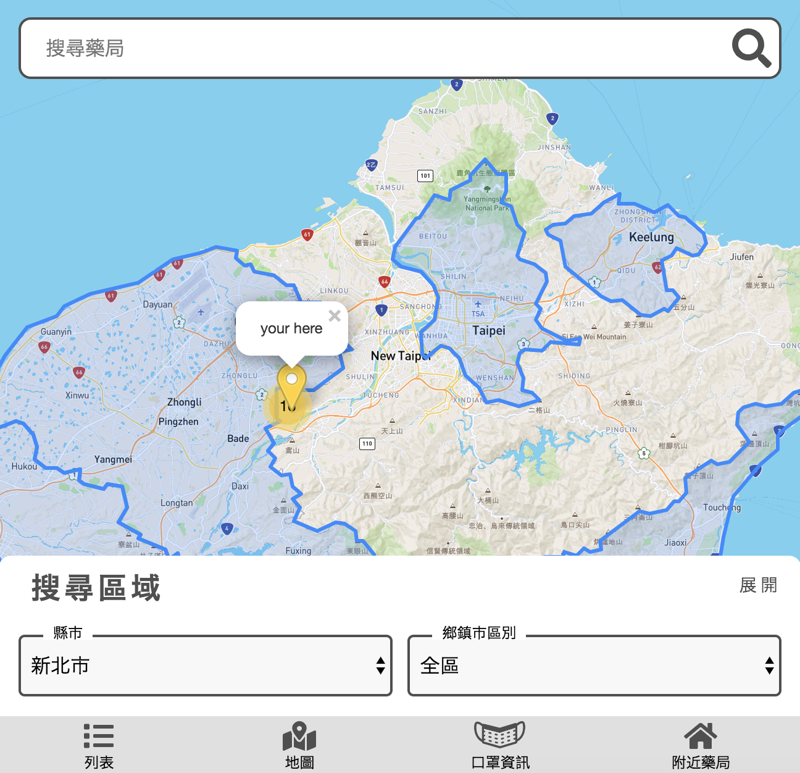

口罩地圖

契機
因為 NOVID-19 (武漢病毒) 造成了全世界的罩慌，使得口罩供不應求
在這此時 The F2E - 前端修練精神時光屋 也發起了 口罩地圖 side project 的製作
同時也提供了 API 還有徵求了許多設計師的設計稿
也就搭上了這一波的疫情列車!
使用技術
RWD
響應適已成為現今網頁不可或缺的設計了
Angular
近期轉職的關係 公司需求開始使用 Angular 框架
也正好用來檢示這陣子學習的成效如何
圖資
使用的 leaflet + mapbox
畢竟 google 要收錢了呀 QQ
最後採用了Shan 設計師的設計稿
她所設計的介面第一眼就吸引到我的目光，裡面顯示口罩數量是帶著可愛的人物 icon 呈現
比其他設計師只有文字的呈現 看起來活潑許多
過程
一開始照著設計稿切版產出，過程中發現使用上有點卡卡的，
於是就加上了自己的想法下去做修改，最後變成了自己的形狀 XDDD
一開始資料一次呈現 然後再選區域 發現會造成等待時間過長，所以邊思考著改成顯示當地縣市資訊
加上定位，顯示當下縣市區域
加上了定位資訊 Geolocation
在處理這部份的時後 卡了一小段時間，因為 leaflet 沒有提供經緯度反查縣市的 API
所以 就將目前得到的定位資訊 拿去比對最近的藥局，進而找到當下縣市，一次呈現當地的口罩資訊
顯示附近藥局
但後來發現 縣市的範圍太廣了，需求者想知道的是 離他最近的藥局剩下多少口罩，以便查買
所以就再多加了附近 2km 藥局的資訊。
因為一開始是呈現只有地圖的畫面的情況，親友回報剛開啟畫面的時後 一頭霧水 不知道該如何使用，
後來就改成 一開始直接呈現附近藥局的列表狀態，讓使用者第一眼就能知道 家裡附近藥局還剩多少口罩
幫親友買口罩，發現使用不順
清明連假返鄉，要幫親友買口罩，也就順手拿起了自己寫的口罩地圖來使用，
一開始寫的是固定距離範圍搜尋，發現偏鄉地區的藥局距離好遠，不能擴大搜尋，當下十分困擾
所以也就加上了可更改搜尋範圍功能。 自己的問題自己救 XD
小結
很開心這次可以使用自己的專業做出這次的口罩地圖讓有需要的人使用查找，滿滿的成就感
也算是滿足自己小小的虛榮心 XDD
感謝你看到這裡 ^_^
若您正在使用它，也歡迎給我建議與使用心得哦